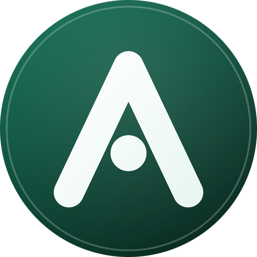

academiasGestão desportiva para clubes portugueses
Liga a direção, os treinadores, os departamentos, as famílias e os sócios.
Desliza →
Gestão
academias.pt
Área técnica
Editor tático com animação por frames. Planos de sessão por blocos. Biblioteca de exercícios, modelos de jogo e bolas paradas.
Futebol 11, 9, 7, 5 · Futsal
A app do clube
Treinos, jogos e convocatórias. Assiduidade, avaliações e as mensalidades.
Cartão digital, quotas, votações e o próximo jogo do clube.
A consola do clube, dentro da mesma app instalada.
Com o nome, a cor e o ícone do clube. Instala-se a partir de um link — não há loja.
A confirmação chega do banco ao servidor e o estado muda sozinho. Ninguém marca nada como pago à mão.
MB Way · Multibanco · Cartão
Sócios
Rui Santos
Sócio efetivo desde 2019 · Época 2026/27
Página pública de adesão, cartão no telemóvel e quotas mensais ou anuais — emitidas sem ninguém carregar num botão.
Segurança
O isolamento não é um filtro na aplicação — é uma política na base de dados. Um pedido que perca o contexto do clube não devolve dados a mais: não devolve nada.
Dados clínicos à parte, como o RGPD manda. Alojamento na União Europeia. Acesso administrativo restrito, registado, e com prazo.
Os dados são do clube
Planos
Consola
14,99 €
por mês
O clube por dentro: gestão, treino, clínico e scouting.
Connect
19,99 €
por mês
Tudo isso, mais a app do clube, os sócios e os pagamentos.
Um ano pago à cabeça sai 10% mais barato.
academias.pt